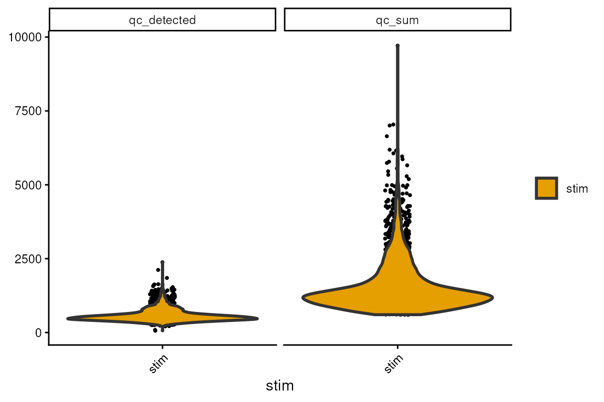
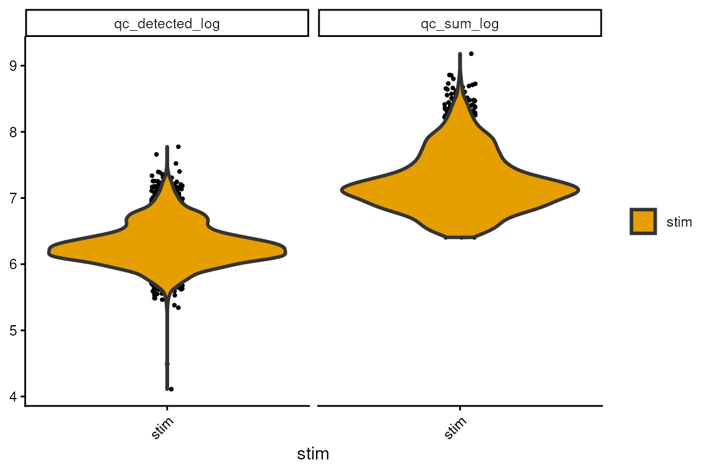
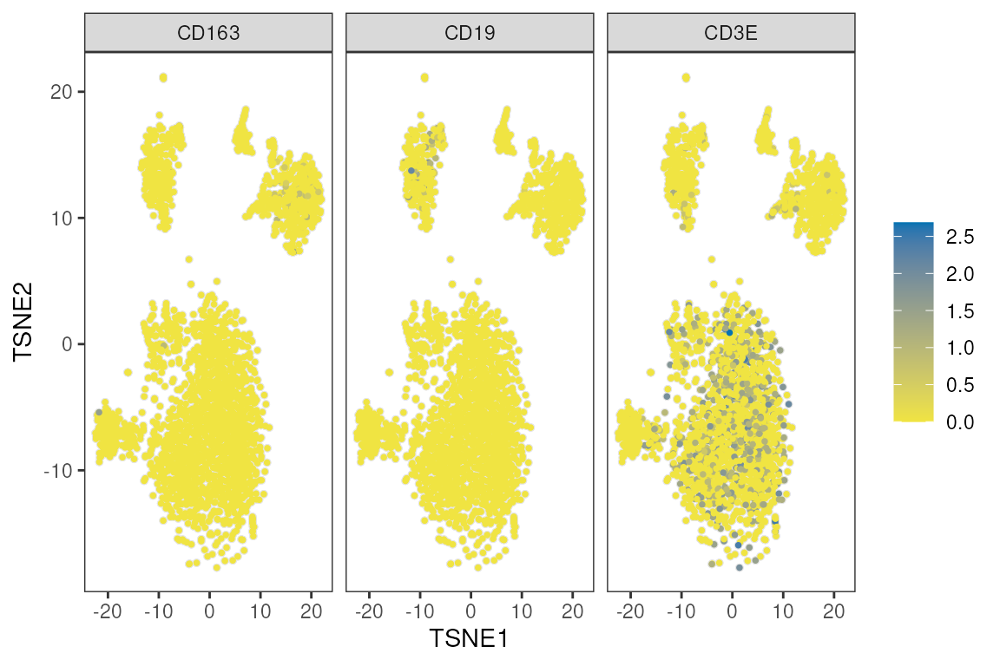
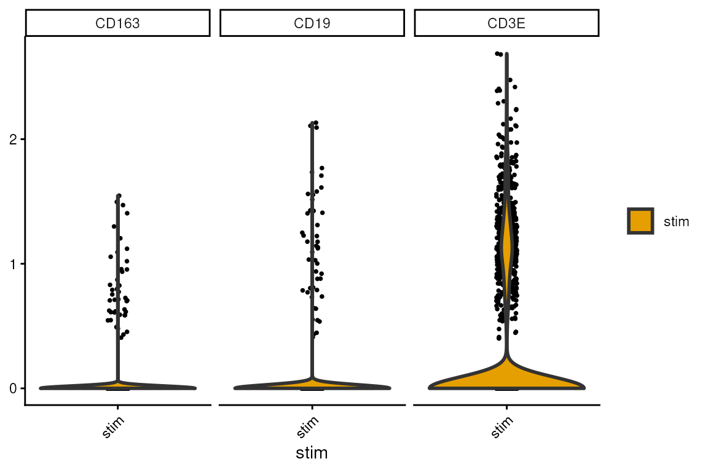
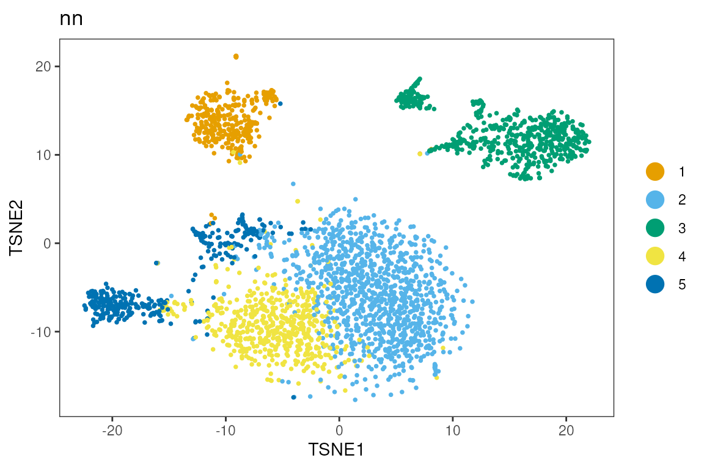
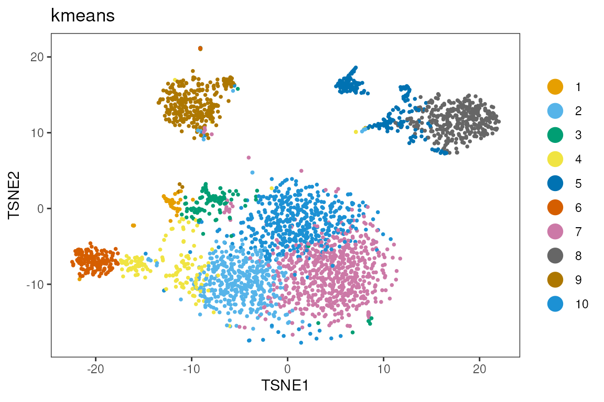
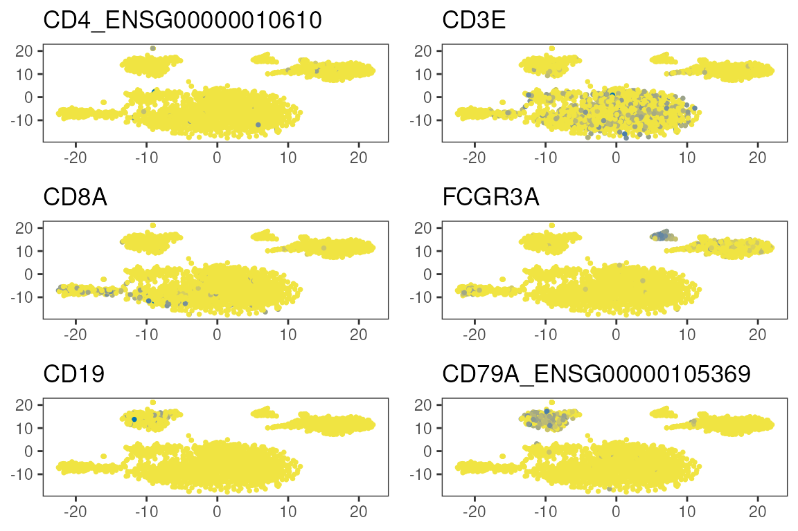

vignettes/S02_single_sample_workflow.Rmd
S02_single_sample_workflow.RmdThis workshop introduces the basics of single-cell RNA sequencing (gene expression) and a minimal analysis workflow to students with a background in data science, machine learning, and statistics.
Along with the topic of your workshop, include how students can expect to spend their time. For the description may also include information about what type of workshop it is (e.g. instructor-led live demo, lab, lecture + lab, etc.). Instructors are strongly recommended to provide completely worked examples for lab sessions, and a set of stand-alone notes that can be read and understood outside of the workshop.
2 hours workshop??
| Activity | Time |
|---|---|
| Analysis plan | 15m |
| Working with SCEs | 15m |
| Single-sample workflow | 45m |
| multi-sample workflow | 15m |
| Reflection & Best Practices | 30m |
List “big picture” student-centered workshop goals and learning objectives. Learning goals and objectives are related, but not the same thing. These goals and objectives will help some people to decide whether to attend the conference for training purposes, so please make these as precise and accurate as possible.
Learning goals are high-level descriptions of what participants will learn and be able to do after the workshop is over. Learning objectives, on the other hand, describe in very specific and measurable terms specific skills or knowledge attained. The Bloom’s Taxonomy may be a useful framework for defining and describing your goals and objectives, although there are others.
library(muscData)
#> Loading required package: ExperimentHub
#> Loading required package: AnnotationHub
#> Loading required package: BiocFileCache
#> Loading required package: dbplyr
#>
#> Attaching package: 'AnnotationHub'
#> The following object is masked from 'package:Biobase':
#>
#> cache
sce<-Kang18_8vs8()
#> see ?muscData and browseVignettes('muscData') for documentation
#> loading from cache
sce<-sce[,sce$ind==1488&sce$stim=='stim']
is.mito <- grep('^MT-',rownames(sce))
rownames(sce)[is.mito]
#> [1] "MT-ND1" "MT-ND2" "MT-CO1" "MT-CO2" "MT-ATP8" "MT-ATP6" "MT-CO3"
#> [8] "MT-ND3" "MT-ND4L" "MT-ND4" "MT-ND5" "MT-ND6" "MT-CYB"
rowSums(counts(sce))[is.mito]
#> MT-ND1 MT-ND2 MT-CO1 MT-CO2 MT-ATP8 MT-ATP6 MT-CO3 MT-ND3 MT-ND4L MT-ND4
#> 0 0 0 0 0 0 0 0 0 0
#> MT-ND5 MT-ND6 MT-CYB
#> 0 0 0
sum(rowSums(counts(sce))==0)
#> [1] 21241
library(scuttle)
df <- perCellQCMetrics(sce, subsets=list(Mito=is.mito))
#> Warning in .per_cell_qc_metrics(assay(x, assay.type), subsets = subsets, : 'perCellQCMetrics' is deprecated.
#> Use 'scrapper::computeRnaQcMetrics' instead.
#> See help("Deprecated")
summary(df$sum)
#> Min. 1st Qu. Median Mean 3rd Qu. Max.
#> 604 1015 1290 1552 1786 9709
hist(df$subsets_Mito_sum)
sce$qc_sum<-df$sum
sce$qc_detected<-df$detected
sce$qc_detected_log<-log(sce$qc_detected+1)
sce$qc_sum_log<-log(sce$qc_sum+1)
sce<-logNormCounts(sce)
#> Warning in .library_size_factors(assay(x, assay.type), ...): 'librarySizeFactors' is deprecated.
#> Use 'scrapper::centerSizeFactors' instead.
#> See help("Deprecated")
#> Warning in .local(x, ...): 'normalizeCounts' is deprecated.
#> Use 'scrapper::normalizeCounts' instead.
#> See help("Deprecated")
dittoPlot(sce,c('qc_sum_log','qc_detected_log'),group.by='stim')
sce$ind<-as.character(sce$ind)
dittoDimPlot(sce,reduction.use = 'TSNE',c('CD3E','CD163','CD19'))

# Clustering
sce$nn<-clusterCells(sce,use.dimred = 'PCA', BLUSPARAM=NNGraphParam(k=20,cluster.fun = 'louvain',cluster.args = list(resolution=0.75)))
#> Warning in clusterCells(sce, use.dimred = "PCA", BLUSPARAM = NNGraphParam(k = 20, : 'clusterCells' is deprecated.
#> Use 'bluster::clusterRows' instead.
#> See help("Deprecated")
sce$kmeans<-clusterCells(sce,use.dimred = 'PCA', BLUSPARAM=KmeansParam(centers=10))
#> Warning in clusterCells(sce, use.dimred = "PCA", BLUSPARAM = KmeansParam(centers = 10)): 'clusterCells' is deprecated.
#> Use 'bluster::clusterRows' instead.
#> See help("Deprecated")
dittoDimPlot(sce,reduction.use = 'TSNE','nn')
dittoDimPlot(sce,reduction.use = 'TSNE','kmeans')
table(sce$cluster,sce$nn)
#>
#> 1 2 3 4 5
#> 1 0 0 96 0 0
#> 2 15 1 0 2 3
#> 3 3 2 0 2 84
#> 4 312 0 1 1 5
#> 5 0 36 0 6 2
#> 6 20 1046 13 474 48
#> 7 0 0 1 0 166
#> 8 0 0 475 0 0
#> 9 0 0 7 0 0
#> 10 3 1 1 51 37
genes<-c('CD4_ENSG00000010610','CD3E','CD8A','FCGR3A','CD19','CD79A_ENSG00000105369')
genes %in% rownames(sce)
#> [1] TRUE TRUE TRUE TRUE TRUE TRUE
multi_dittoDimPlot(sce,reduction.use='TSNE',genes)
sessionInfo()
#> R version 4.6.1 (2026-06-24)
#> Platform: x86_64-pc-linux-gnu
#> Running under: Ubuntu 24.04.4 LTS
#>
#> Matrix products: default
#> BLAS: /usr/lib/x86_64-linux-gnu/openblas-pthread/libblas.so.3
#> LAPACK: /usr/lib/x86_64-linux-gnu/openblas-pthread/libopenblasp-r0.3.26.so; LAPACK version 3.12.0
#>
#> locale:
#> [1] LC_CTYPE=en_US.UTF-8 LC_NUMERIC=C
#> [3] LC_TIME=en_US.UTF-8 LC_COLLATE=en_US.UTF-8
#> [5] LC_MONETARY=en_US.UTF-8 LC_MESSAGES=en_US.UTF-8
#> [7] LC_PAPER=en_US.UTF-8 LC_NAME=C
#> [9] LC_ADDRESS=C LC_TELEPHONE=C
#> [11] LC_MEASUREMENT=en_US.UTF-8 LC_IDENTIFICATION=C
#>
#> time zone: Etc/UTC
#> tzcode source: system (glibc)
#>
#> attached base packages:
#> [1] stats4 stats graphics grDevices utils datasets methods
#> [8] base
#>
#> other attached packages:
#> [1] muscData_1.27.1 ExperimentHub_3.3.2
#> [3] AnnotationHub_4.3.2 BiocFileCache_3.3.0
#> [5] dbplyr_2.6.0 bluster_1.23.1
#> [7] scran_1.41.1 scater_1.41.2
#> [9] scuttle_1.23.2 SingleCellExperiment_1.35.2
#> [11] SummarizedExperiment_1.43.0 Biobase_2.73.2
#> [13] GenomicRanges_1.65.4 Seqinfo_1.3.2
#> [15] IRanges_2.47.5 S4Vectors_0.51.10
#> [17] BiocGenerics_0.59.12 generics_0.1.4
#> [19] MatrixGenerics_1.25.0 matrixStats_1.5.0
#> [21] dittoSeq_1.25.0 ggplot2_4.0.3
#> [23] BiocStyle_2.41.0
#>
#> loaded via a namespace (and not attached):
#> [1] DBI_1.3.0 httr2_1.3.0 gridExtra_2.3.1
#> [4] rlang_1.3.0 magrittr_2.0.5 otel_0.2.0
#> [7] ggridges_0.5.7 compiler_4.6.1 RSQLite_3.53.3
#> [10] png_0.1-9 systemfonts_1.3.2 vctrs_0.7.3
#> [13] crayon_1.5.3 pkgconfig_2.0.3 fastmap_1.2.0
#> [16] XVector_0.53.0 labeling_0.4.3 rmarkdown_2.32
#> [19] ggbeeswarm_0.7.3 ragg_1.5.2 purrr_1.2.2
#> [22] bit_4.6.0 xfun_0.61 cachem_1.1.0
#> [25] beachmat_2.29.3 jsonlite_2.0.0 blob_1.3.0
#> [28] DelayedArray_0.39.8 BiocParallel_1.47.0 irlba_2.4.1
#> [31] parallel_4.6.1 cluster_2.1.8.3 R6_2.6.1
#> [34] bslib_0.12.0 RColorBrewer_1.1-3 limma_3.99.0
#> [37] jquerylib_0.1.4 Rcpp_1.1.2 bookdown_0.48
#> [40] knitr_1.52 BiocBaseUtils_1.15.1 Matrix_1.7-6
#> [43] igraph_2.3.4 tidyselect_1.2.1 abind_1.4-8
#> [46] yaml_2.3.12 viridis_0.6.5 codetools_0.2-20
#> [49] curl_8.0.0 lattice_0.23-1 tibble_3.3.1
#> [52] KEGGREST_1.53.6 withr_3.0.3 S7_0.2.2
#> [55] Rtsne_0.17 evaluate_1.0.5 desc_1.4.3
#> [58] Biostrings_2.81.9 filelock_1.0.3 pillar_1.11.1
#> [61] BiocManager_1.30.27 BiocVersion_3.24.0 scales_1.4.0
#> [64] glue_1.8.1 metapod_1.21.0 pheatmap_1.0.13
#> [67] tools_4.6.1 BiocNeighbors_2.7.3 ScaledMatrix_1.21.0
#> [70] locfit_1.5-9.12 fs_2.1.0 cowplot_1.2.0
#> [73] grid_4.6.1 AnnotationDbi_1.75.2 edgeR_4.99.6
#> [76] colorspace_2.1-3 beeswarm_0.4.0 BiocSingular_1.29.1
#> [79] vipor_0.4.7 cli_3.6.6 rsvd_1.0.5
#> [82] rappdirs_0.3.4 textshaping_1.0.5 S4Arrays_1.13.2
#> [85] viridisLite_0.4.3 dplyr_1.2.1 gtable_0.3.6
#> [88] sass_0.4.10 digest_0.6.39 SparseArray_1.13.4
#> [91] ggrepel_0.9.8 dqrng_0.4.1 htmlwidgets_1.6.4
#> [94] farver_2.1.2 memoise_2.0.1 htmltools_0.5.9
#> [97] pkgdown_2.2.1 lifecycle_1.0.5 httr_1.4.9
#> [100] statmod_1.5.2 bit64_4.8.6